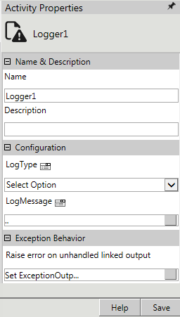
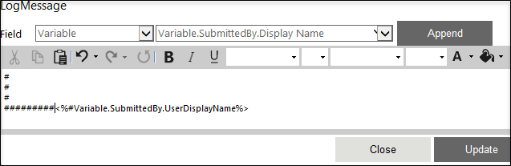
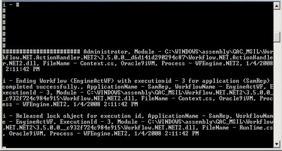

No
Activity description:
The Logger Activity can be used to log messages like information, warnings, and errors to the logger console from the workflow.
Activity Properties:
The Logger activity has to be configured by specifying appropriate values for the different properties in the Activity Properties area. The Activity Properties can be accessed by clicking the Activity Properties tool in the Tool Bar or by selecting the appropriate option from the right click menu for the Logger activity. The Activity Properties are organized under the following groups of related properties. The properties under each group are described in this topic.

Name & Description
The properties in the Name & Description group have been described below. You can use these properties to specify the name and description for the activity.
Name - This property can be used to specify a name for the activity.
Property Type: Optional (This property needs to be set only if necessary.)
Description - This property specifies a brief description to be displayed for the activity.
Property Type: Optional (This property needs to be set only if necessary.)
Configuration
The properties in the Configuration group have been described below. You can use these properties to configure the functionality of the activity.
LogType - This property allows the user to select the type of message to be logged. The drop down lists the following options: Information, Warning, and Error.
Property Type: Mandatory (This property must be set if the activity is to be executed.)
LogMessage - This property allows the user to specify the message to be logged.
Property Type: Mandatory (This property must be set if the activity is to be executed.)
Steps to set the Log Message property
See Log - Log Message for a detailed description of the Log Message property window.
Activity outputs:
The Logger Activity does not return any value.
Example for a Logger:
Step 1: In the Activity Properties of the Logger1, select LogType as Information, and click Save button of Activity Properties.
Step 2: Log Message - Select the field as Variable in the first drop-down. In the second drop-down, select the Variable.SubmittedBy.DisplayName, and then click Append.
Step 3: The entry would be as this: <%#Variable.SubmittedBy.DisplayName%>. The '#' Symbol is just for quick identification of data in the Logger.

Note: Before publishing the workflow, start the AVEVA Work Tasks Logger Console.
Output:
In the logger, you can see the contents of the variable Variable.SubmittedBy.UserName with the '#' symbols.
In the below figure you can see the name Administrator at the end of the # symbols.

Exception Behavior
Each activity has the Raise Error on Unhandled Linked Output property on click of which, it shows all the default configured mapped error outputs in red with their check boxes selected.
See Mapped Error Outputs for more details.